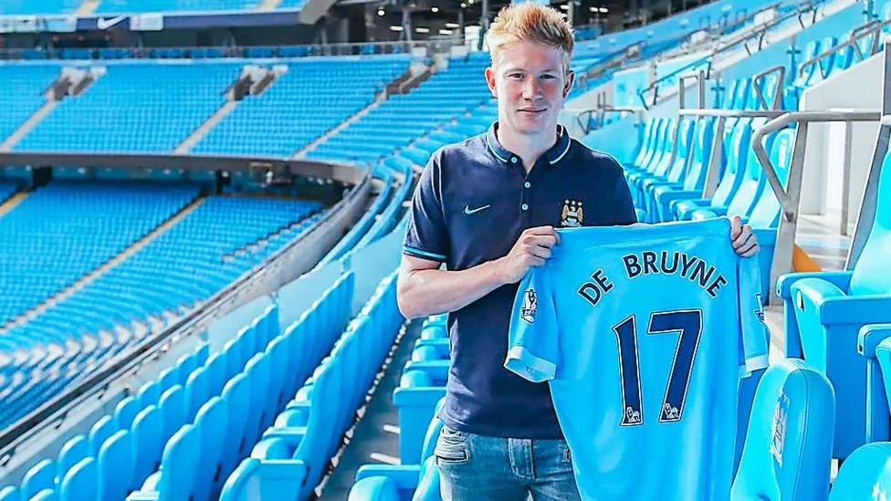

Kevin de Bruyne
En legend i Manchester City
Statistik
356
Matcher
102
Mål
169
Assister
18
Titlar
Resan genom åren
2015
Ankomst till Manchester City
Kevin de Bruyne skrev på för Manchester City från Wolfsburg för en rekordsumma på 55 miljoner pund.
2017-18
Centurions-säsongen
Hjälpte City att vinna Premier League med 100 poäng och satte nya rekord i engelsk fotboll.
2020-21
Champions League-final
Ledde City till sin första Champions League-final någonsin.
2024-25
Avskedssäsongen
Hans sista säsong som Manchester City-spelare efter 10 fantastiska år.
Interaktiva funktioner
Favoritmål
Tröjor
Hyllning
"Kevin de Bruyne är en av de bästa spelarna jag någonsin har tränat. Hans teknik, vision och ledarskap är exceptionella." - Pep Guardiola